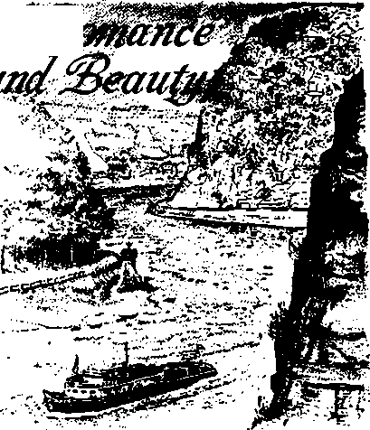
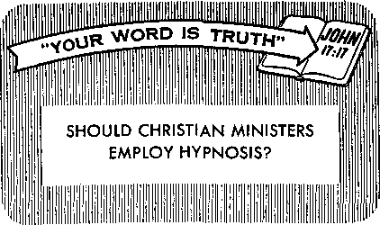

e Rhine—River of Romance and Beauty
PZXGE 9
e Rhine—River of Romance and Beauty
PZXGE 9
Walk on Fire
PxaGE I if
to Get the Job You Want
OCTOBER 22, 1959
THE MISSION OF THIS JOURNAL
News sources fhof are abte to k^ep you awake to the vital Issues of our times must be unfettered by censorship and selfish interests. “Awake!1’ has no fetters^ It recognizes facts, faces facts, is free to publish facts. If is not bound by political ambitions or obligations; it is unhampered by advertisers whose toes must not be trodden on; it is unprejudiced by traditional creeds. This journal keeps itself free that it may speak freely to you. But it does not abuse its freedom. It maintains integrity to truth.
“Awake*” uses the regular news channels, but is not dependent on them. Its own correspondents are on all continents, in scores of nations. From the four corners of the earth their uncensored, on-the-scenes reports come to you through these columns. This journals viewpoint is not narrow, but is international. It is read in many nations, in many languages, by persons of ail ages. Through its pages many fields of knowledge pass in review—government, commerce, religion, history, geography, science, social conditions, natural wonders—why, its coverage is as broad as the earth and as high as the heavens.
"Awake!” pledges itself to righteous principles, to exposing hidden foes and subtle dangers, to championing freedom for all, to comforting mourners and strengthening those disheartened by the failures of a delinquent world, reflecting sure hope for the establishment of a righteous New World.
Get acquainted with “Awoke!" Keep awake by reading “Awake!”
Published Simultaneously in the United States by the" WATCHTOWER BIBLE AND TRACT SOCIETY OF NEW YORK. INC. U7 Adtiims Street Brooklyn 1, N. Y.h U, S. A.
and in England uy WATCH TOWER BIBLE AND TRACT SOCIETY
London N.VV. 7, E/igJand
• Grant Suiter, Secretary
4d a copy
RftimIttanc($ for MibbHpi inn^ should he sent (o the afilm in yriiir country Othi'iwiM1 .if nd your Ti'iniituncf! to L'tnhm. Nirticp of tundra Him Is 41
Watch Tower House, The Ridgeway N. H. Knorr, President
Printing this issue: 2,900,000
“Awafcel” h published tn the fallowing 19 ranguagts:
At riiu.iri*. Jjiglikh, h'iim-
wh, FTiweb, Gi't-t-k LLii.liu.ti, JajuiiiiCMs, N<ir*f*
gian, I'tirl.iigursr, Spanish. Swurtishr, Turing.
Monthly—Vtnyunjia, Indotifiuin, l"kraiiiLiin, Zulu
Year Lf si ibsn i IH Loj] t ji Les
Offices for scrtiijnyiiiiik' i'dicldtis
Amor/S’a, ILS, 2 17 Achims yr., Hnwklyn 1. N.Y. $1
Australia. 11 Btuesfrud lid.. SLratliiii-lci, N.S.W. H/-Crinada. 130 Bridgt-lain! Avn., Tmimin II?, OiiL. $1 England, Watch Towe!* Huiist'!.
The Ridgway. London X,W. 7 7/-
New Zealand, fiLSl New North Rd,. Aimhbuirl, s.W. 1 7/-
South Africa, Private Bag, P.O Ehindshtiteln, TvL 7/-
Moiiihly Billtirms cum Eiafr the sttrure rato.
Ijcfo;«' suhMiiplinn opiri'fe.
CHANGES OF ADDRESS should reach thirty days before your moving dnte. Give us your aid and new address (if pJd addrfrts JahriL Watch
rower, Watch Tower House, the Ki'dgBway, Landon N.W. 7, England.
Emeril ns si?c<?jid rhisi trial (er itl Brooklyn, N.Y, Prinleil in England
The Bible translation used in ‘Awake'11 is the New World Translation of the Holy Serlpteres. When other translations are used the following Symbols will appear behind ths citations:
A,S — Ann.'ri :-iii[L SI anibird Vr-ision AT - An AriH-ririjn Tranidjit.iori JT-r — jttithrTi-Jxcvf YwJcn (JfiJl) JJu - ... A. iJiiihy'N version
- Lmlnilm llrnj.iy vi'j-sinn
- The Emphatic IM^lutt JP — Jewish I'u bin-all on Six. Le - Isaac Iz-fser' + verson
JfO - James M u ft'.i 11' h version lio - .1, R. Kol.li'-rljani s version RS — Revised stair।anl Version
- Kolkrr Yohji h's vtTsinn
CONTENTS
The Rhine —River of Romance and Beauty 9
Beef—from the Hoof to the Plate 17
"Your Word Is Truth"
Should Christian Ministers
Happiness is something that people of all nations desire.
But the experience of the majority has been that heartache and grief tend to crowd out the things that bring joy. Oppression, war, painful disease and death have caused rivers of tears to flow down their faces. While many despair of anything better, those who have sincerely studied the Bible kno-" *hat a world without tears is at hand.
It is not medical science that will prove to be man’s savior, delivering him from all that causes grief. It is true that medical research has fought disease and reduced pain, but there is no wonder drug that can be given or operation that can be performed by man to remove the sin that is responsible for man’s imperfection and death. We are born in sin. “Through one man sin entered into the world and death through sin, and thus death spread to all men because they had all sinned.” (Rom. 5:12) One greater than man must intervene if humankind is to be relieved of this basic cause of unhappiness.
By means of revolutions and elections men have sought relief from selfish and oppressive rulers. If the righteous were in authority the people would rejoice, but because the wicked bear rule the people mourn. On both national and international levels they strive to improve conditions.
Yet no international peace conference has put an end to war, and no election or revolution can force out of office the one who today is bringing great woe upon the earth, Satan the Devil.—Rev. 12:12.
In quest of some sound basis
for hope, countless persons have turned to Christendom’s religious organizations. But they are disillusioned when their religious leaders direct their attention back to the old world, urging them to take a more active part in politics and to support the man-made United Nations. They cannot see in such systems the followers of Jesus, who he said would be ‘‘no part of the world.”—John 15:19.
However, those who have turned to Jehovah’s Word the Bible and associated with his New World society of witnesses have unshakable confidence in God’s kingdom. With understanding they pray: ‘‘Our Father in the heavens, let your name be sanctified. Let your kingdom come. Let your will come to pass, as in heaven, also upon earth.” (Matt. 6:9, 10) Yes, they believe that there will be a righteous new world embracing both heaven and earth, and that it will be a world without tears. ‘‘And God himself will be with them. And he will wipe out every tear from their eyes, and death will be no more, neither will mourning nor outcry nor pain be any more.
The former things have passed away.” —Rev. 21:3, 4.
God’s kingdom will achieve the things that men have been unable to do for themselves, namely, root out death-dealing sin and destroy the Devil himself. The King Jesus Christ is the one who as Executioner at the fast-approaching battle of Armageddon will “destroy the one having the means to causq death, that is, the Devil.” (Heb. 2:14) And as King-Priest of the new world he will apply on behalf of all earth’s inhabitants his ransom sacrifice to free them from every trace of sin and bring them to human perfection.—Rev. 1:18.
While he was yet on earth Jesus performed many wonderful works, giving a foretaste of what he would do as Ruler of the new world. One evening when he was visiting in the home of Peter in Capernaum, the “people brought him many demon-possessed persons; and he expelled the spirits with a word, and he cured all who were ailing; that it might be fulfilled what was spoken through Isaiah the prophet, saying, ‘He himself took our sicknesses and carried our diseases/ ” (Matt. 8:16, 17) On another occasion, as he approached the city of Nain he encountered a funeral procession. Turning to the widowed mother of the dead man, he said: “Stop weeping.” And then he gave her good reason to dry her tears. “He approached and touched the bier, and the bearers stood still, and he said: ‘Young man, I say to you, Get up.’’ And the dead man sat up and started to speak, and he gave him to his mother.” (Luke 7:13-15) That power to heal and to restore the dead to life the King Jesus Christ will exercise for the blessing of mankind in his righteous new world.
Drawing attention to another one of the blessings of his rulership, the Bible refers to Jesus as the Prince of Peace. And Isaiah 9:7 adds: “To the abundance of the princely rule and to peace there will be no end." Men will learn war no more. Think what that will mean! No more heartache and tears of grief as husbands and sons are taken from their families to fight, no more fear of air raids, no more cripples and desolation as the terrible aftermath of war. Never again will a tear be shed because of the distress that war brings.
When will it come? Instead of simply hoping that someday the world without tears will be a reality, Jehovah’s witnesses have studied the Bible to find out when it says these things will be. Matthew chapter 24, Mark chapter 13, and Luke chapter 21 unite in giving the basis for the answer that the generation that has witnessed two world wars of unprecedented magnitude, earthquakes that have taken a toll ten times as great as in generations past, food shortages that debilitate two thirds of earth’s population, the establishment of first the League of Nations and then the United Nations to divert the attention of men from God’s righteous government, and the preaching of the establishment of the kingdom of God in all the earth as it is now being done—yes, this generation that saw the beginning of these things in 1914 “will by no means pass away until all things occur.” Said Jesus: “When you see these things occurring, know that the kingdom of God is near.” (Luke 21:31, 32) It is evident that these things have been occurring now for forty-five years, that this generation is soon to expire, and that the long-sought answer to the prayer, “Let your will come to pass, as in heaven, also upon earth,” is at hand.
Such a well-founded hope, based on the promise of Jehovah God, whose word cannot fail, has already lifted from the lives of men of faith the unhappiness that plagues the old world. They rejoice in the hope ahead, and urge you to do the same.
WHERE
iC'T'HE West has erred,” says A British historian Arnold
Toynbee, “because it has chosen to fight Communism with Communism’s own weapons. . ■ . Western Democracy must base its appeal on more than freedom, more than prosperity: it must base its appeal on religion.”
Why should historian Toynbee imply that the West is not basing its appeal on religion? Does not Christendom teem with churches? Does not Christendom have a mighty religious organization that opposes communism—the Roman Catholic Church? Are not some countries such as France and Italy ninety percent or more Catholic? How, then, could it be that Christendom has failed to base its appeal on religion?
These questions provoke the thought: There is more to the growth of ungodly communism than poverty or economic discontent. The/ole of religion has been too often overlooked. When people have the hope and faith that the early Christians had and that the Bible inspires, they can get along on very little in a material way and still be content. “So, having sustenance and covering,” said an apostle of Jesus Christ, “we shall be content with these things.” (1 Tim. 6:8) But when one is spiritually undernourished or famished, then economic discontent turns into a monster, a colossus that campaigns as the ally of communism.
So it is enlightening to read more and more these days of the blame for the growth of communism being placed not so much at the doorstep of economic discon
THRIVES
Tfty have professed Christians turned Commtmirt? Why do many persons who believe in Qod vote for CommUKtst candidates}

tent as at the doorstep of Christendom’s religions.
Discussing an editorial in a Roman Catholic newspaper, an International News Service dispatch from Boston said: “The Pilot, official newspaper of the Roman Catholic Archdiocese of Boston, in an editorial entitled ‘God and Khrushchev’ asserts that ‘the crimes of capitalism spawned the Communist monster? ‘It is a sad day when we must learn lessons from atheists, but that day is already here,’ said the editorial. ... In an interview with William Randolph Hearst, Jr. ... Nikita Khrushchev was prevailed upon to discuss the subject of religion. He did so in not unimpressive terms; ‘We are atheists . . .’ he said describing himself and his fellow Communists in eulogistic fashion. Then he proceeded to describe the West and its representatives: ‘God is but a mask these people put on. . . . They lean on the word of God and then violate it. - . . God is being used by these people for hire.’ ”
Concluding, the Roman Catholic newspaper said: “This is a very dangerous sport we are playing—hide-and-seek with divinity. To forget Him in the sunshine and seek Him in the storm is very primitive indeed, and God does not accept us at our convenience and on our terms. If a poisoned capitalism produced a zealous communism, it was a fraudulent Christianity that produced a soulless atheism. What Khrushchev is, we taught him to be. Is it any wonder that he mocks us? ... He was our victim and he has returned to judge us.”
Communism’s growth has indeed passed judgment on Christendom! Communist Khrushchev blatantly points his finger, in justifying his atheism, at a hypocritical Christianity, the kind in which people “lean on the word of God and then violate it.” It was almost as if Khrushchev had been reading the Bible, using it to prove Christendom’s religions hypocritical; for the Bible declares at Titus 1:16: “They publicly declare they know God, but they disown him by their works.” Where, then, does the main responsibility for communism’s growth lie? Said the Catholic newspaper: “What Khrushchev is, we taught him to be. . . . He was our victim.” So Christendom’s “fraudulent Christianity” has spawned communism and its “soulless atheism.”
“What about atheism?” recently asked prominent theologian Karl Barth in a letter to an East German pastor that was published in the March 25, 1.959, issue of The Christian Century. “Do you not agree that almost everything that calls itself atheism is to be taken seriously only in so far as it rests on misconceptions—for which Christianity too, with its doctrine, attitude and practices, is largely responsible? I heard an amusing and apropos story the other day: One Berliner confesses to another that he has left the church. The other asks: ‘Why, don’t you believe in God?’ ‘Yes, of course,' the first replies, ‘but not in his ground crew'—that is to say, us Christians, and perhaps especially us theologians.”
So there exists the paradoxical situation of millions of persons believing in God but not in their clergy, those whom they consider the “ground crew.” No wonder millions of persons in France and Italy claim to believe in God and yet they vote for Communist candidates! No wonder communism has thrived in religious countries, even those dominated by religious hierarchies such as the Roman Catholic Chtirch! No wonder the Catholic Church has failed to prevent Catholics from voting Communist even under the threat of excommunication!
Many are the people who, having observed the peacetime and wartime operations of the clergy, are disgusted at clerical political meddling, greed and hypocrisy. Have not the clergy stooped to enter the world’s arena of dirty politics? Have not the clergy, both Catholic and Protestant, blessed guns, cannons, battleships and armies? Have not clergymen prayed for military victory for their side, even though its effect meant praying for the defeat or death of millions of persons in enemy countries who professed those clergymen’s own brand of religion? Did not Catholic priests in Italy and Germany during World War II pray, in effect, for victory over their fellow Catholics in France, England and America? Did not Protestant ministers do the same, putting the god of nationalism above the God of the Bible? Was it not Nikolai Lenin himself who pointed to Christendom’s hypocritical works when he told George Lansbury: “Go back home and convert the Christians; get a world of justice by Christian teaching. No one wants bloodshed, but Christians slaughter each other as readily as others for material gain”? So Khrushchev and his ungodly communism have ‘‘returned to judge” Christendom!
But it is not just clerical hypocrisy and greed that have turned many persons away from religion. It is also the failure of the clergy to impart to the people the knowledge that gives hope and faith and love. It is failure to teach the people the pure Word of God, unadulterated with pagan doctrines and worldly philosophy. It is failure to inculcate Bible principles upon the minds of the people. It is failure to teach the people concerning the kingdom of God and the paradise new world that that kingdom will bring about within this generation. Spotlighting this clergy failure, the Jesuit magazine America of October 22, 1955, said:
“To Catholics, in particular, it seems shocking that the largest Communist party this side of the Iron Curtain should be found [in Italy 1. - . . There is the incontrovertible fact that, though Italy is described as a Catholic country and its people are Catholic in their culture to the very core, nevertheless, enormous numbers, particularly in the towns, have over a period of some generations drifted away from the Church or have grown extremely slack in the practice of their faith, . . . Lax or fallen-away Catholic countries, like lax or fallen-away Catholic individuals, are apt to turn to communism. This is a fact we must face. They are, as it were, subconsciously aware of the spiritual vacuum in their lives.”
How significant this “spiritual vacuum” among teeming numbers of Catholics! It is not just in lands dominated by the Roman Catholic Church where the common people have felt a “spiritual vacuum.” What was the spiritual condition of the people in Russia before the Bolshevik Revolution in 1917? The Russian Orthodox Church, working hand in hand with the Czarist government, dominated the common people, leaving them spiritually famished. After the revolution there was a glaring exposure of the real frauds that the orthodox clergy had practiced on the oppressed people. How much did the course of action of the orthodox clergy contribute to the growth of communism in Russia? If Christendom’s religions and their clergy had really lived by Bible principles and had taught the pure Word of God, would ungodly communism have sprung up into a colossus right within the realm of Christendom? Those who have turned Communist or who are voting Communist have stumbled at the hypocrisy of what they call the “ground crew,” the clergy; and, although some still believe in G»d, they have turned away from religion.
It is among people feeling a “spiritual vacuum” and among people who detect a false Christianity that economic discontent becomes a powder keg.
Moreover, the common people have found the sermons and masses of the clergy to be irrelevant to their daily life. Said the Jesuit magazine America in its issue of May 2, 1959: “In his 1954 Christmas address, the late Pope Pius XII did not lament simply the ignorance of Catholics. He deplored the fact that many Catholics actually disparage the Church’s social teaching as invalid or pointless. Those circles in Italy and elsewhere in Europe that have occasioned this second decree, of the Holy Office [regarding the ban against voting for Communists | are precisely those Catholics who look elsewhere for guidance in meeting the social problems of our time- They end by collaborating with the Communists.”
Worker Priests
What have the clergy done to try to win back the workingman who views his church’s “social teaching as invalid or pointless”? One effort has been the workerpriest movement. But was this a movement of priests going into the homes of the people to teach them Bible principles? No! It was a movement of priests to the factories. With the clergy’s leaving the Bible and Bible teaching out of the picture, the result was inevitable: Instead of winning masses back to the fold, the priests themselves felt enchanted by communism. Reported the New York Times of February 22, 1959:
“The Roman Catholic episcopacy in Italy is investigating a church-sponsored workers’ movement alleged to be mixed up in left-wing politics. Under particular scrutiny is the role of the chaplains who serve on all echelons of the nation-wide organization and are frequently described as the Italian counterpart of the former French worker priests. The experiment in France of clergymen’s donning overalls and working as manual laborers in industrial plants was halted by the Vatican five years ago because of fears that the worker priests, instead of winning Communist fellow workers back to religion, might themselves fall prey to Marxist ideology.”
Putting priests to work in factories may have made the workingman somewhat more friendly toward the “ground crew,” but what did such work accomplish toward filling the spiritual vacuum that caused the trouble in the first place?
If all the priests and bishops and cardinals of the Roman Catholic Church went to work in factories, wquld this win the people away from the Communists and back to the church? A few priests realize that something more is needed. In the Roman Catholic Our Sunday Visitor of November 18, 1956, there is a report on a conference that Priest John A. O’Brien had with Priest Augustine Arcibal in Paris. The French priest admitted: “The Church will continue to lose ground if means are not speedily found of weaning back the great toiling masses which have become almost entirely estranged from the faith. We need more ‘shoe-leather apostles’ who will call at homes, instruct people and bring them to Mass and the sacraments. Stagnation and anticiericaiism result when priests remain in the sacristy. They, along with lay apostles, must go out after the strayed and lost sheep.”
But the worker-priest movement was not a house-to-house campaign to instruct the people. Even house-to-house visits to get people to go to church are not enough. What the people need is Bible knowledge. They need to know about God’s kingdom and how this wicked world will soon be destroyed at God’s war of Armageddon and how this will make way for a new world of righteousness. They need to learn that communism, along with Christendom’s false Christianity, is doomed when God through Jesus Christ “brings due punishment upon those who do not know God and those who do not obey the good news about our Lord Jesus. These very ones will pay the penalty of everlasting destruction.”—2 Thess. 1:8, 9.
So that honest-hearted people can learn these truths of the Bible and especially the good news of God’s established kingdom, Jehovah’s witnesses go to the homes of the people. The “spiritual vacuum” of many persons is being filled with faith and hope. Then persons who were once weak and unable to resist the enticements of communism become strong for God and his kingdom. They become content even under unfavorable economic conditions, for their hope is to live on a paradise earth in God’s new world. True Christianity furnishes no basis for growth of communism. Bible-fed Christians “go on acquiring power in the Lord and in the mightiness of his strength.” False Christianity—the real breeding grounds for communism—leaves a “spiritual vacuum” upon which communism thrives.—Eph. 6:10.
By “Awohr1 correspondent in West Germany
HAD Johann Strauss lived in Mainz, Coblenz or Cologne he doubtless would have named one of his waltzes, "An Dem IVwiderschonen Rhein" for the Rhine is truly wonderfully beautiful. Starting in the Swiss Alps and winding its way some 800 miles through central Europe before making a grand exit into the North Sea in the Netherlands—that is the course of the majestic Rhine River. Famous in history, ancient and modern, without peer as regards romantic legends and highly valued as an artery of commerce, it is indeed a remarkable river.
The most excitingly beautiful part of the Rhine is the stretch between Bingen and Bonn, This is known as the “Middle Rhine” and is among the most popular tourist attractions of Europe. Winking playfully in the sunlight, mysterious and awe-inspiring on an overcast or misty day, it makes the most of whatever the weather may be to bring joy and happiness to those viewing it. Here are to be found the majority of the fascinating Rhine castles, dotting the sharply rising landscape on either side of the river.
Here also are to be found the renowned Rhine vineyards, the source of the equally celebrated Rhine wines. Though the hills are rocky, the land in between the rocks is cultivated and terraced, making it possible to plant grapevines there. The rows rise sharply one above the other. Strong rains wash much of the topsoil dow’n the hillside, and this must be replaced. What a job it must be to clamber up the sides of these hills with small baskets of earth to replenish the bare spots! Later, when the grapes begin to ripen, little huts perched on good vantage ooints become temporary homes for armed
guards, who let no one enter until harvesttime. After being picked, the grapes are hustled off to the wineries, later to be sent off to distant parts of the earth to serve as friendly ambassadors of the Rhine’s charm. Most of the little villages lying snuggled up into the protecting hillsides of “Father Rhine” celebrate wine festivals yearly. Visitors from miles around come to enjoy the singing and gaiety, all to the accompaniment of a glass of good Rhine wine.
Many are the interest-arousing spots along the Rhine that impress themselves deeply upon one’s memory. Of course, they are better seen than written about, for even the most vivid description fails to do justice to the real thing. Among such certainly is the imposing NiedemalddeTik-mal, literally the “Lower Woods Memorial,” a statue occupying a commanding position on a high hill overlooking the Rhine near Rudesheim, From its vantage point you get a marvelous view of the Rhine as well as the surrounding countryside, The statue was built between 1877 and 1883 in remembrance of the military victories won in the 1870-71 war with France, It is a statue of the woman Gar-mania, the symbol of Germany, with sword in hand, keeping “watch over the Rhine,” She stands some thirty-five feet high and is perched atop an eighty-two-foot-high pedestal—a German counterpart, as it were, of America’s Statue of Liberty.
We could not fail to remember the Mouse Tower, located on an island near Bingen. According to legend, there once lived an archbishop by the name of Hatto from Mainz. During a severe famine, under the pretense of feeding them, he gathered a group of poor people together in a barn, set it afire, and burned them all to death. Because he likened these wretched victims to so many mice, he was supposed to have been followed by mice ever after. Fleeing to this tower, he crept ever higher and higher, fear gripping him at the thought of the horde of hungry mice gnawing their way ever closer. And then the inevitable, and justice triumphed! Today the tower has been put to practical use, serving as a signal tower for the hundreds of river steamers passing by every day.
Chief of all points of interest along the Rhine, however, is the famed Lorelei, a large clifflike rock formation jutting skyward some 423 feet above the Rhine. Here, where the Lorelei shoves its way boldly out into the river, the Rhine is at its narrowest and deepest. The name Lorelei is derived from ley, meaning “cliff,” and luren, meaning “luring"; in other words, the “luring cliffs” or the “luring mountain spirits.” As the romantic legend has it, a beautiful siren named Lorelei would sit on this rock combing her long golden hair and singing such bewitching songs that sailors would try to get nearer, resulting in the cracking up of their vessels on the rock. One can get a marvelous, never-to-be-forgotten view of the Rhine from atop the Lorelei. There you see the majestic rush of the river far below, with its river boats floating quietly along like toy ships in a pond. So well known js this legend that it has become practically symbolic of the Rhine.
Particularly do the castles on the Rhine give it the romantic touch. In the latter part of the Middle Ages they formed the very heart of German culture; the thirteenth and fourteenth centuries being especially noted for castle building. The type of castle you see along the Rhine is not a native of Germany, however, but was brought from the Orient after contact with peoples from the Middle East during the Crusades. Although most of them today are in ruins, yet others have been reconstructed to serve as tourist attractions.
It is interesting to tour one of them, but be prepared to relinquish your romantic notions of handsome knights in shining armor and beautiful maidens living amid gaiety, splendor and excitement of castle life. Far from the cozy and’ warm places you may have pictured, you will discover them to be cold, cheerless and musty. But in their day they served their purpose. Some of them are understandably large, since they served not only as the home of the owners but also had to accommodate large groups of servants and slaves.
These castles also served as places of refuge in times of war. The hilly and clifflike crags upon which they were built lent themselves well for defense purposes. They were so strategically located that generally they could be captured only after a prolonged siege. At the time they were almost impregnable, but later, as more powerful weapons of war came into use, these castles became outdated and outmoded and were abandoned for other more durable bastions. Still, even though only ruins in most cases, they contribute much toward giving the Rhine a romantic touch.
Old legends do their part to add romance to the various spots along the Rhine. Thus Roland’s Corner, Rolandneclt, marks the spot where Roland, a nephew of Charlemagne, was supposed to have secretly viewed the convent where his beloved Hildegund was; she having become a nun after hearing a false rumor that he had died in battle. Poor Roland soon died of a broken heart. Then there are the two twelfth-century castles known as The Brothers. The legend tells of two brothers who loved the same girl and who, after many vicissitudes, ended up by vowing celibacy after the girl became a nun.
The Rhine’s value is not solely romantic. Far from it! In fact, back in early Roman days it was already being used as a main traffic artery. In 55 B.C. Caesar built a bridge across the Rhine, and two years later a second one was constructed. The constant plying back and forth of Roman trade thereafter was chiefly responsible for the founding of some of the now-famous Rhine cities, such as Mainz, Coblenz, Bonn and Cologne- As early as 38 B.C. Roman troops were stationed in what is now Mainz, and by A.D. 50 Cologne had become an established city. By the late Middle Ages Cologne had become Germany's largest city, although in more modern times it was greatly surpassed by Berlin. Cologne has been dubbed the “German Rome” because of its strong Catholicism, and it is best known for its Gothic cathedral and—-perturned toilet water.
Today one visiting the Rhine for the first time is likely to be surprised at the large number of boats he sees, some so heavily laden that they can hardly hold their chins above water. Well over 10,000 ships of eight different types annually haul more than 100 million tons of goods, the total in 1957 amounting to 109 million tons. And what do they carry? Almost half of the total cargo consists of coal. Among the other things carried must be mentioned sand, stones, ores, wood, grain, automobiles and wine.
Except for wartime interruptions the Rhine has been open to international traffic ever since 1868. As a result, one sees the banners of many nations flying from the ships. A system of signaling with horns and flags expedites navigation, and generally no travel is done at night. An intricate network of canals connects the Rhine with such faraway places as Berlin, as well as with neighbovvng, munG’tes. Mot wcMi we overlook the passenger ships, which do a thriving business during the warmer months as thousands take delightful excursion trips along the beautiful Rhine.
Truly the Rhine is a remarkable river, one of surpassing natural beauty and at the same time a vital artery of commerce. Its long and interesting history, as well as its romantic legends, makes it more than just a river. Its vicissitudes of war and peace, love and hate, fortune and misfortune have caused one German writer, Friedrich Schlegel, to term it “the true picture of our fatherland, of our history and of our character.”
In God’s new world so near at hand, however, national distinctions will cease, romantic legends will vanish, and medieval castles will no more be, but the real beauty of God’s creations will remain forever to glorify the One who made them and “whose name is Jehovah,” who alone is “the Most Vhgh over ah the earth.''—Ps. 83:18.
vfa/A on
some prayers to the Hindu
ma. Then the devotees begah ^atkipg'^s /^ .^,';
length of the fiery '
Some crossed j* w ,j
ran throu^^^^W® ^rld^de
strolled^oWatfr^^ in the indu p°PUIatl0n 01
^SfcrflTAfrtca have, at times, practiced this ceremony. Melville Chater witnessed
p]a<^/rec^mfe'4fi?K«'t^ragaihprspe^l^''He $fid
teC^f”wild again man dtowd gasped;
f&^r^hlmg’Ibr,§. ghastly moment o^^^^al^fietbstfaflghtened and stum-■ sighed. Two women ran
tWF&wgh^' .cfcrsi together, holding hands, hr six steps.” Eighty persons
THE entire length of the twenty-by-six-foot pit was a mass of hot, glowing embers. The heat was so intense that persons standing within ten feet of it had difficulty breathing. As the hours passed, it steadily pushed the tense crowds back. At 4 a.m., eight hours after the logs piled in the pit had been set afire, wailing flutes and pounding drums drew attention to a long procession of Hindu devotees led by priests whose faces were decorated ivittr-c white, yellow and red ash. The pro^^i(m£~' stopped at the pit, and the prie^.uftq^d'i wefTf aCIKsss the red-hot bed of coals that Although twelve were badly burned, with one even dying, the rest walked proudly away unhurt.
This was one of the many fire-walking rites that continue to be practiced in this twentieth century, to the amazement of
Western observers. It seems incredible that humans can walk on live coals with bare feet without the slightest sign of a burn. Suggestions that heat-resisting chemicals have been applied to their feet have been proved wrong. The theory that the embers in *the-center of the pit -j'^^snot as hot as "on the edge has been proved ^^ef-roneous. Careful observations by fc chemists, physicians
iiteiy eliminate the idea is a clever trick. It is
it in Durban, Natal. He said the flesh of the walkers had been skewered “as meats are skewered; their heads loll, their tongues slaver, their eyes protrude.” Evidently they were in a religiously fanatic stupor. He went on to say: “One of the soutris runs staggeringly across the fire to the altar of his gods. Another passes over, a woman, chanting; and now a third, a boy of eight years. Then come two who, colliding midway, fall prone on the fire bed, then rise and stagger onward to the shrine. . . . Indisputably the foot soles of two of the soutris, as they lay in collapse after the ceremony, showed ash dust, but no bums.”
A traveler in Singapore who witnessed a fire-walking rite there stated that a pile of wood was burned into a bed of embers twenty-four feet long. “The atmosphere was rendered almost unbearable by the intense heat,” she said. Elizabeth Lewis observed that idol gods had been taken from the temple for the occasion and had been placed at the far end of the trench. “The staring eyes of the devotees,” she said, “seemed glued upon the idols at the other end of the path of glowing embers. Finally, the priests who held back the devotees began to lash them with whips, and one by one they made a dash, barefooted, across the red-hot coals into the pool of milk. . . . Some ran and some walked slowly through the coals.”
In Banki, India, John Moyer observed devotees walking on trenches of hot embers that varied in length from ten to 120 feet. One walked the full distance of 120 feet, not once, but four times. The fire walkers participated in the rite to fulfill vows they had made to their gods. The trenches were a foot wide with a six-inch depth of fiery-red embers. Moyer noted that the devotees were in a "religious fervor due to their just having taken part in several hours of highly emotional religious ceremonies and rites.”
As they walked barefooted on the hot embers, he observed that their “faces bore no trace of pain—only the glazed look seen in the eyes bf religious fanatics.” He examined the feet of the devotee who had walked the full length of the 120-foot trench of embers four times. “There was not,” he said, “a blister or a trace of burned flesh anywhere on the soles of his feet. I must say that the feet of these people, since they go through life barefooted, are amazingly thick and tough. . . . However, I doubt that an ordinary man— myself, for instance—could have walked for 120 feet over those red-hot coals even with a pair of leather-soled shoes. I found that I was unable to hold my hand less than a few inches above the glowing coals. Even to straddle the foot-wide trench is unbearable."
This fantastic ceremony is not confined to people outside Christendom. There is a village in northern Macedonia where members of the Greek Orthodox Church walk on fire. These people were observed by A. C. Sedgwick in 1956 while they were engaged in the rite and again in 1957 by Dr. Arnold Krechmal. They danced on a bed of live coals barefoot for nearly half an hour. Sedgwick states that this “appears possible only because its participants have worked themselves into religious ecstasy. This condition is the result of. long, concentrated contemplation of holy images and is achieved with the aid of primitive music. . . . Examination of their feet after their performance showed no burns or blisters.”
The dancers consider fire walking not only as a religious rite but also as a religious duty passed on to them by their ancestors. According to Doctor Krechmal, those ancestors were worshipers of the sun and of fire. “All during the performance,” he said, “I tested the embers and found them to be unbearably hot to my hand, although the performers seemed completely unaffected by them.” The rite is also carried on in Bulgaria by people called Nistinares.
The natives in the eastern Polynesian archipelagoes walk on fire in a manner that differs measurably from the way it is done in other parts of the world. They use searing-hot rocks instead of embers. On the island of Raiatea, Wilmon Menard witnessed a fire-walking ceremony. He stated in his account that the stones were heated for two days in a gigantic fire. The heat, he said, "could be felt 50 feet away on the evening of the second day.” Before the walk began the next morning a tourist dropped a linen handkerchief on the rocks. It was quickly reduced to gray powder.
After chanting an ancient fire-walking prayer the chief fire walker stepped into the oven of stones, called the “umu,” and walked across it unscathed. He promptly retraced his steps through the umu with a number of his tribesmen following him. Describing it, Menard says: “Again the Fire-walking Chief struck the stones with his branch of ti leaves. Terii-Pao and his tahuas walked with firm steps across the center of the Umu. I could see the great heat waves rising above their heads, but there was no odor of burning flesh as I had half expected.” The fire walkers then permitted the tourists to examine their feet. Menard says: “The soles, as I could see, were not even marked.”
Terii-Pao invited Menard to walk across the umu with him. With some trepidation Menard took off his shoes and stepped in line with the natives. The line began to move toward the hot stones. “Then my bare feet,” he says, “touched something uneven and elevated. In the next instant, countless tiny electric shocks struck the soles of my feet. It was like the sudden contact of the skin with sharp needles. Great heat waves rose about my head, compelling me to half close my eyes. . . . I was unable to draw a normal breath. . . . Then suddenly, the prickly sensation on the bottom of my feet ceased, and I knew I had arrived at the far end of the Umu. ... I glanced briefly down at my feet. They were untouched. There was no trace of searing or blistering. I could hardly believe my eyes.”
Menard is not the only European who has walked across the hot stones of a Polynesian umu. It was on this same island, and quite a number of years earlier, that four Europeans crossed it upon the invitation of the fire walkers. Three were unhurt, but the fourth disobeyed instructions by looking back while in the umu and was burned. One of the men testified: “I knew quite well I was walking on red-hot stones and could feel the heat, yet I was not burned. I felt something resembling slight electric shocks, both at the time and afterwards, but that is all. ... I did not walk quickly across the oven, but with deliberation, because I feared to tread on a sharp point of the stones and fall. My feet also were very tender.” A half hour after they had crossed, the native priest threw a green branch on the stones. “In a quarter of a minute,” the European said, “it was blazing.”
A few years ago Jessie Horn witnessed and took part in a fire-walk ceremony on this same island. Regarding her experience she said: “Never could I have imagined such tremendous heat with no attendant pain. . . . My feet showed no signs of burn, although they did feel unusually hot for several hours.”
Scientists have yet to find a satisfactory explanation for fire walking. Although they have offered various theories, none are generally accepted as the answer to how fire walking is done. One theory is based on the spheroidal state of liquids. An example of this is when water is dropped on a very hot surface. Instead of evaporating it rolls about in small balls. The steam that forms beneath the balls prevents them from coming into direct contact with the hot surface. It has been suggested that this is what happens in fire walking. Perspiration on the feet of the walker insulates them from the searing heat. It is questionable, however, whether there would be sufficient perspiration on the soles of a person’s feet for his first step or two into the fiery pit. Then too, how well can the heavily calloused feet of a native fire walker perspire?
Another theory contends that callouses act as a protection from the heat, but this must be rejected in view of the many persons who have walked on hot embers and stones with tender feet. Colonel Haggard examined the feet of fire walkers in Japan and said: “They were quite soft, and not a trace of fire upon them.”
Scientifically controlled tests were conducted in Surrey, England, in 1935 and again in 1936. Physicians, chemists, physicists and Oxford professors witnessed them. The first test involved an Indian fire walker by the name of Kuda Bux. A fire pit was especially prepared, the surface temperature of which was measured at 430 degrees Centigrade, or 806 degrees Fahrenheit. Kuda Bux walked across it without injury.
A year later a test was staged at the same place for Ahmed Hussain. At his request a trench of glowing embers was prepared that was twelve and a half feet long, four feet wide and fifteen inches deep. The heat from the trench was so great it could be felt sixty-five feet away. The temperature measurements taken by the physicists revealed a surface temperature of 1067 degrees Fahrenheit and an interior temperature of 1292 degrees Fahrenheit.
Before stepping into the pit Hussain recited prayers from the Koran, and the scientists washed one foot to make sure no chemicals had been used. Hussain walked across the fiery pit in three quick steps, each step taking 1.3 seconds. His feet sank into the embers two or three inches, bringing the hot coals into contact with the upper part of his feet. A careful examination disclosed no sign of a burn.
Later, the length of the trench was increased to twenty feet. This time the embers prodneed a surface temperatafe of 1364 degrees Fahrenheit. Twice as many steps were takdh by him on this crossing, with the result that five blisters appeared on his right foot.
One of the observing scientists decided that he would try it. He stood for a moment at the end of the pit in his bare feet, and then crossed it in four quick steps. His feet were red but not burned. Two more scientists tried it but both received slight bums.
The conclusion of these learned men of science was, according to the magazine Science Digest, “that the usual fire walk should in no sense be considered a trick, since it can be done in a normal manner with bare and chemically unprepared feet. Evidently the very low thermal conductivity of smoldering wood or stones prevents damage to normal skin if the contact is less than half a second and the number of consecutive steps is not too great.” This tawsw, fioes wV ac
count for the fact that Hindu fire walkers are able to walk across a bed of embers much longer than twenty feet. The trench in Banki, India, as you will recall, was 120 feet in length. There is also the fact that the Macedonian peasants, previously mentioned, did not walk across the coals but danced on them. Then there are the Polynesians who are able to walk through their umu in a deliberate and unhurried manner. It was observed that their feet are placed firmly on each rock. If they are not burned because the rocks are poor heat conductors, why was a handkerchief quickly reduced to ashes when placed on one?
There can be little doubt that fire walking is an unchristian religious rite whose roots go back to pagan antiquity. History is very clear about this. It tells us, for example, that the priestesses of the Asiatic gofifiess ATteffws 'wa&efi VaT&loot un Yiot charcoal on occasions, but it does not say first-century Christians did. It also tells of certain men near pagan Rome who made it a practice to go to the sanctuary of the goddess Feronia at the foot of Mount Soracte and walk unscathed over flaming embers in honor of her. Even the Indians of ancient Yucatan practiced a form of fire walking.
In his book Magic and Religion Andrew Lang states: “The subject occurs everywhere in history, legend, folklore, law and early religion.” Then he makes reference to the Canaanite practice of causing sons and daughters to pass through a fire to Molech. The Bible speaks of this frequently. For example, it states at Jeremiah 32: 35 as follows: “Furthermore, they built the high places of Baal that are in the valley of the son of Hinnom, in order to make their sons and their daughters pass through the fire to Molech, a thing that I did not command them, neither did it come up into my heart to do this detestable thing.”
Whether this ‘passing through the fire to Molech’ includes the same practice as that of the Hindus in walking over hot coals to reach their idol gods cannot be stated with certainty. But we see from the Scriptural account that passing through fire, whether it was for sacrificial or thanksgiving or purification purposes, was practiced centuries before the Christian era.
Idol gods have long been associated with fire walking. The Chinese of Fo-Kien province carried their idol god across hot coals in a sedan chair. The priest of the Dosadhs in Bihar, India, was thought to become the tribal god Rahu incarnate when he walked the trench of fiery embers. The Bhuiyas of Mirzapur incorporate fire walking in their manner of worshiping the tribal hero Bir.
Although many theories have been offered as an explanation of how fire walking is done, they are not entirely satisfactory. The fact that fire walking has long been associated with pagan religious rites and worship makes it plain that wicked spirit forces may have something to do with it. The Bible reveals their existence when it says that Christians have a fight “against the wicked spirit forces in the heavenly places.”—Eph. 6:12.
This fantastic rite is definitely not the way man’s Creator has instructed mankind to worship him. It never entered into his mind that his worshipers should walk over pits of blazing embers or leap through fires (this was done in European fire festivals) to honor, worship or fulfill vows to him. Neither was it his wish that religious devotion should be shown by piercing one’s cheeks and tongue with skewers, sticking myriads of pins in one’s flesh and fastening hooks in one’s body, as some Hindu fire walkers have done. Nor can devotion for him be shown by carrying for a distance in one’s hands or on one’s head a hot clay pot full of burning coconut husks, as did two Hindu women at Kataragama, Ceylon, before the fire-walking rite held there. Because they were uninjured it does not mean the true God approved what they did. These things are an abomination to him, just as were the devilish practices of the ancient worshipers of Molech.
The manner of worship that man’s Creator, Jehovah, requires is clearly set out in the Bible and is contrasted there with the practice of Devil-inspired religions of that time. As he required his worshipers in olden times to keep clean from pagan religious customs, so he does today. Whether a satisfactory natural explanation is found for fire walking or not, it can never be considered to be a divinely approved practice for true Christians. Its pagan background precludes Christians from being among those who walk on fire.
ALMOST everyone enjoys a tender, juicy beefsteak. Often just the thought of it is sufficient to send the expectant saliva flowing. It is a predilection that dates far back into human history. In medieval times the European banquet table was incomplete without this tasty item. King James II of England is said to have been so delighted with a roast off the loin end of beef that he called it “Sir
available. From that time forward the grazing and roaming days are over for these cat
tle and they will spend the next few months on a specialized, fattening diet carefully prepared and administered by an expert.
Experienced feedlot operators exercise considerable ingenuity in locating and in designing equipment to suit their own conditions. The location should be well drained, preferably on a southern slope,
Loin.” Yet few are aware that the thick, juicy steak that we delight in at the dinner table was only shortly before the serious concern of an expert cattle finisher. In fact, we take so much for granted that the idea of “cattle finish-
from the Hoof to the Plate
•AWAKE!- CORRESPONDENT IN CANADA
arid convenient to both feed and water. It would be just as unwise to situate the feedlot on a perfectly drained slope to which all feed and water had to be hauled, as to have feed and water at the fingertips but the cattle wallowing in mire and manure most of
ing” has only a vague meaning to most minds. Yet this business of converting range cattle into finished beef of the highest quality plays a vital role in the economy of every cattle country. This you Will be convinced of if you sometime have the experience of sampling the poor-quality beef taken directly from range to market. Yes, indeed, cattle finishing is an art as specialized and delicate as that of the finest woodwork craftsman. Its judges are the hundreds of thousands of critical consumers whose tastes demand tenderness and palatability.
Cattle finishing has developed of necessity in the Temperate Zone, where the growing season on the open range is not long enough to produce the finished product. Unfinished cattle from the ranching areas are collected into “feedlot” areas, where plenty of grain, hay and water are the time. Convenience for the cattle and convenience for the feeder are the two prime considerations. A combination of contented cattle eating and drinking with minimum effort, and a contented feeder supplying feed, water and bedding, and cleaning out manure at a minimum cost in steps and hard work is the ideal one.
Have you ever visited a feedlot where this thriving industry is carried on? If not, come along with me and you will enjoy learning by observation. When first brought in these cattle were fed sparingly on hay only until they became accustomed to their feed and surroundings. Are you surprised at how convenient everything is? That building is a self-feeder. It contains the coarse ground grain to which the animals have access at all times. Cafeteria service, so to speak. The grain is ground because its feed value is thereby increased some 20 to 40 percent, and the grind is coarse because experience shows it to be more palatable and less likely to cause the cattle to go “off feed.” Tests have shown that self-fed calves make faster gains and are therefore finished for market sooner.
See how the hay is stacked along the side of the enclosure and fed through a pole fence. It is pushed UP once or twice daily so that the calves may be able to feed as they desire. If six to eight pounds a head is fed daily, along with a full feed of grain, there is little need for adding protein or mineral supplements to the ration. Sometimes a limited quantity of alfalfa or other legume hay is added to the diet, as well as cereal grain straws containing a lot of fiber, such as from wheat, barley or rye. In certain areas molasses is used, not so much for the food value as for the fact that it improves the palatability of the low-grade roughages.
Over here you will note the large trough of clear, fresh water, which is so essential for healthy feeders. An abundant supply is important at all times, for tests indicate that fattening calves drink from six to eight gallons a head daily. Certain mineral elements are also necessary for normal animal life. What you see in that separate trough is salt; animals that do not get sufficient salt will not do well, while salt slightly increases the digestibility of the ration and makes for cheaper gains.
The small pen off to the side is a hospital pen. All feedlots should have one. Sick animals cannot be left with the rest of the stock, for they will be pushed and shoved about and even trampled on and will lose out in the rush to the feed. An unhealthy animal may also be a menace to others in the same lot.
Space is quite an important factor in this industry. The expert operator will figure out space in shed and yards very accurately, allowing some one hundred square feet an animal in the yard, and thirty in the shed. You may be thinking that that high, open-front shed of singleply boards is not much shelter for the cattle. However, you must know that warm quarters for feedlot cattle are neither necessary nor desirable. AH they need is protection against wind, snow and rain. See how this operator has been careful to have his shed facing south, and even then that high fence opposite the shed serves as a weather break from that direction.
Bedding for the cattle is another important consideration. Why not just throw in plenty of straw? If we do, then the production and conservation of a maximum amount of manure for use on the fields will not be realized, and the farmer will be deprived of an excellent fertilizer. On the other hand, too little bedding can be serious. Says one authority: “Cattle that have an opportunity to lie down only in wet bedding, manure, or mud, or on frozen lumps of droppings do not make either rapid gains or efficient use of their feed.”
You will by this time realize that you cannot just throw the feed and water and bedding at the cattle and leave them to make out as best they can. The expert operator will be on the job. He knows that the progressive stages through which the cattle go are the signals for him gradually to alter their diet for best results. Weather changes, too, have an important bearing on this matter, so he will spend considerable time in the feedlot, watching closely for those signs that mean so much to his success. He looks for bright eyes, sleek coats, manure soft but not watery, grain cleared up within thirty minutes of when it is fed, and cattle chewing their cud while lying down in evident comfort.
How keenly observant he must be can be gathered from the fact that errors in feeding or drastic changes can throw cattle “off feed,” with the danger that it may take weeks for them even to regain their appetite. That could spell serious loss to the feedlot man, since his profit is dependent upon producing the best results in the shortest possible time. Feed is costly and heavy expense could be incurred in feeding cattle for even an additional day or two.
ASK FOR THE NEXT ISSUE
9 The Dead Sea Scrolls give strong confirmation to Christian faith; they add to the evidence that the Bible is true. Read about them in the next issue.
Q Here Come the Smail Cars! What's the attraction? Why do so many buy them? Don't miss the article in the next issue.
This group of yearlings are smooth and slick, and it will not be long before they are on the way to market and your table. This type of calf usually requires from 180 to 200 days on full feed to gain a finished weight of from 650 to 850 pounds. When finished, the carcasses of these animals will have a good covering of fat and the meat will have the right degree of marbling, that is, being interlaced with fat. The desirable finish means not onjy the amount of fat, but the equal distribution of it over the body. It must be mellow, yet firm; not soft and flabby. The best beef has a smooth outer layer of brittle, creamy white fat; a much thinner layer of fat is spread over the inside surface. There are streaks of fat between the larger muscles along the connective tissues and between the muscle fibers. The lean parts of beef are the muscles and the tissues. These should be firm, velvety and fine in grain. Lean beef is a bright cherry red when first cut.
Now imagine yourself back home, a delicious and tantalizing aroma of roast beef pervading the premises, and you have just completed an active day in the field or at the office. Don’t you welcome the sizzling platter as it reaches the table? Are you not impatient to sink your teeth into that slice of delicious roast beef?
Beef is surely a most nourishing and wholesome food. And how widespread its
appeal! People in the United States eat about one fourth of all the beef produced in the world, sixty-five pounds a person a year. The people of Argentina eat the
most meat per person, averaging about two hundred pounds a person a year. Ranking next are New Zealand and Australia, with an average of a hundred pounds a year. Canada, Great Britain and Denmark eat fifty to sixty-five pounds, on the average. On the other hand, India consumes very little beef, since Hindus regard the killing of cattle as a sin.
The cattle-finishing artist can derive much satisfaction from his art, apart entirely from its pecuniary returns. He knows his product provides plenty of energy in the form of carbohydrates. The 15- to 20-percent protein content of beef is what will do much to build body tissues, and the calcium and phosphorus in beef aid in the manufacture of bones and teeth. All these vital elements are found in his finished product. When it reaches the table, too, his finished art has furnished us with a delicious, appetizing dish that brings health and pleasure.
Bad for Men, Worse for Women
C. In a report in The Journal of the American Medical Association, Dr. Morris Friedell states that women are ‘'much more sensitive” to nicotine and other tobacco products than men.
you enjoy
you wo
a-
ps like
job you wou
man emphasizes the extras when he sells, so must you be prepared to stress your extras, that is, your assets, when you begin to sell yourself to an employer. You must
HAT must you do to find a job? With
40,000 different kinds of work to choose from, how can you be sure of picking the right job for you—a job you would enjoy doing? Suppose you are a beginner without experience, or a job seeker up in years or low in education, who is there to see? what is there to do? where should one go to find the right job?
To get a job you must sell yourself. You have experience, achievements and skills for sale. You must know what these are and be ready and willing to sell these to employers. This is an art in itself, because few of us are born salesmen. But we can all learn. As an automobile sales-
be ready to describe your training, list your experiences, outline the work you have performed and furnish references. You cannot afford to be overly shy, embarrassed or frightened when doing this. You must tell others about yourself and your accomplishments.
Suppose you do not know what you want to do, what then? Take out a pencil and paper and make a list of all the things that you have done and can do. Study this list carefully to see if your abilities are bent in a certain direction. If so, follow that direction. Ask yourself pointed questions: Do I like to work with people or alone? Do I enjoy working inside or outside? Do I like meeting people, selling, traveling, or competition? In big offices workers usually specialize; in small offices they generally do many things. If you like people, you may make a good salesman. If you enjoy clothes, try a job in a clothing store. If
being a mechanic. From your list decide on what Sfy best, then go after it.
Next, find out what it takes to make good in the field you have chosen for yourself. Check into the advantages and disadvantages from the standpoint of opportunity, future, salary and the like. Talk to people who work in the line you are aiming at. Ask them, “What do you do?’’ “How do you get started in this field?” “What education and training do you have to have?” “Can you give me an idea how much money a beginner would make?” “What are the chances of getting ahead?” “Who must I see to get started?” Have a notebook handy and jot down all the information possible, because it is valuable to you.
After you have proceeded this far, dig out your hidden assets and determine how you can apply these to your chosen field. Do not say, “I’m a jack of all trades. I can do anything.’* Today employers are not interested in persons that “can do anything.” They are out seeking specialists. They want men or women who will make or save money for them. Usually when a job applicant says he can do “anything,” or will do “anything,” the employer concludes that he can do nothing well. Therefore, speak in terms of accomplishments. Ask for a specific position and use the term the company attaches to the position. Never ask for more than one job.
What are your assets? “I don’t have any,” you say. Everyone has assets. You must prove to employers that you have assets and skills that would be of value to them. Did you organize games in school? originate any new systems? do any special work for your father or mother? Were you ever given a special problem to solve? How did you meet it? Are you skilled at driving a car? Have you operated a tractor or run a sewing machine? These are assets, things to your credit. Do not simply say, “I'm honest, I work hard and I’m reliable.” So are thousands of others who apply for jobs. You must reveal more about yourself. The extras are your assets. Write them down and go over and over them so that you no longer speak of yourself in generalities but in terms of accomplishments,
After you have studied yourself and the occupational world closely and have decided on the type of work you want and how your skills may be applied to the work you have in mind, then the search for the job begins. The question is, Where and how do people find jobs?
People generally turn to friends and relatives, to former employers, to schools and advertisements for leads to employment. They also apply to unions, visit placement agencies and study business directories. A recent survey showed that 56 percent of the job seekers seek work through public employment services, and another large percentage through placement facilities of schools, colleges and private employment agencies. The more contacts you make, the quicker you will get the job you want. A salesman knows he will meet up with a number of “no’s” for every "yes.” So in job hunting do not become disheartened when you hear the familiar, “I’m sorry.” Make the law of averages work for you. Follow up every worth-while contact you can. List at least ten companies that can use your skills and work from the top down—going to each.
It is no crime to be out of a job, so do not hesitate to make your wants known. Do not try to go it alone, because if you do, you will not get. very far. Friends have many contacts. They may know of openings in the firms where they work or with other companies, or have acquaintances who know of job prospects. You are not asking your friends to get you a job; you are merely asking them to acquaint you with places where openings may exist.
The newspapers also are valuable for employment leads. Both the news items and the financial page tell of new companies opening up, companies that are expanding; they tell of people being promoted, moving, dying or changing their employment, which means job vacancies and possible leads. Want ads list jobs of a great variety.
Getting job leads may be relatively simple, but getting an interview with the company official is another matter. If you receive your leads from an employment agency, or a placement bureau, or a newspaper telling you to report at a certain place and time for an interview, there is no problem. But if you are endeavoring to arrange for an interview by letter, or telephone, or a want ad, you do have a problem.
If you are advertising for a job, make sure you choose a reputable newspaper and plan your ad. Your ad must be interesting and complete to be successful. In it state the type of work you want, your qualifications, education, age, sex and marital status. Give your telephone number and the hours that you are available for calls, also your mailing address. Make it as easy as possible for the employer to get in touch with you.
You may write an employer for an interview. If you do, know' that the letter will represent you; it wall create either a good or a bad impression of you. Good letters are rare, that is why they almost always get careful attention. Use a good grade of paper. If at all possible, type your letter. Always address your letter to a specific person, never to a company or a department. Do not try to be clever. Be natural, straightforward in your approach. Offer a service. Show how you can make good on your offer. Be brief, but not too brief. Remember, brevity without content will not sell. Never make a statement of ability or of interest without backing it up. Do not say, “I can type and take dictation.” Be specific. Say, “I type sixty words a minute and can take dictation as fast as you are likely to give it.” By this the employer knows what you can do. In closing, ask for an interview. Include in your letter both your address and telephone number. Use the principles of personal salesmanship.
Hiring is seldom, if ever, done by telephone any more. But it is possible to secure appointments for interviews by telephone, which may mean a job. Telephone conversations with employers, like letter writing, require planning and' technique. Always ask for a specific person. The switchboard operator or the secretary of the business firm generally will give you the name of the hiring agent. When the operator connects you with the person you want, call him or her by name and state your business. The personal touch is still worth its weight in gold when you are out hunting for a job. Use it. State your qualifications briefly, but completely. Discuss the possibility of your working for the company. Request an interview. Let the personnel officer take it from there. If he asks you, “How are you on the telephone?” do not just say, “Fine,” or, ‘‘Pretty good,” because that does not answer his question. He wants to know whether you are efficient at taking down names and addresses correctly, making and arranging appointments over the telephone. Tell him, “I have a pleasant voice (which means a great deal over the telephone), and I’m good at getting names and addresses correctly and I’ve made appointments without any difficulty at all.” If he says, “Fine,” say, “When can I appear for an interview?” He will give you the place and time.
All preparation so far has been for this occasion called the interview. An interview is the doorway to a job, but not the job itself. It merely puts you in contact with a company representative who evaluates you in terms of the opening. However, people generally get hired as the result of the interview.
Before going to see the interviewer, it would be wise to give yourself one last brush up on all your favorable selling points—your assets. Learn beforehand as much as you possibly can about the company, its history and business, its policies, products and services. Review your education, your interests and experiences in terms of the company’s needs and wants. If at all possible, learn something about the person who is going to interview you. Not that you are going to discuss his interests, rather do so to get a better mental picture of the man. This knowledge will help to put you at ease when you are before him. Also know why you have left previous jobs. Tell the truth, because cnv ploycrs usually check. Know why you have chosen this particular company; do not approach the interviewer until you have something better to say than ‘‘You have a vacancy,” or, “I need a job and money.” Instead, tell the interviewer, “I like the way you treat your employees,” or, “Your promoting system appeals to me,” or, “Your retirement plan is appealing. I think it wise. It interests me very much.” If you cannot think of a reason for having chosen this particular company, say to the interviewer that you have analyzed yourself carefully and that you believe that the company offers you the best opportunity for the position you are qualified to fill.
It is wise, too, to prepare for objections, such as, “We are hiring only college graduates,” or, “I’m sorry, you are a little above our age limit.” Be ready to combat these objections with sound arguments. For example, if the interviewer says, “I’m sorry, you are too old for the job,” do not simply reply, “I’m healthy and strong for my age.” That will never do. Instead, answer, “Perhaps you’re right, Mr.----. But
the job you are offering demands good judgment and skill. And you know as well as I that good judgment and skill come with years. Don’t you feel these years of experience, judgment and skills that I have can be of value to your firm?”
One young lady applied for a job as a receptionist. The interviewer was impressed with her qualifications, but he had already promised the job to another girl. What was he to do? The young lady, being alert, asked, “Which is harder, to turn your promise down by telephone or turn me down in person?” He smiled, “You’re right,” he said. “You win. The job is yours.” It pays to be alive with answers.
Dress in a businesslike manner for the interview and not as though you were going to a formal dance or to a sports event. The interviewer will judge you by your personal appearance, your attainments, your general intelligence, your special aptitudes, interests and disposition.
When he asks questions, do not give weak answers. Speak distinctly, directly and slowly. Do not look down or mumble. Use good English. Avoid slang and profanity, even though the interviewer may use it. Do not talk too much. The wise King Solomon wrote: “The foolish one speaks many words.” (Eccl. 10:14) However, if the interviewer1 says, “Tell me about yourself,” be ready to speak to him in terms of experience and accomplishments. Never deride your past employers. Always stick to the facts without making excuses. Be courteous and co-operative at all times. If you are asked to fill out an application blank, fill it out. Make the sheet a credit to you. Attempt to be as natural as you can. Try not to be negative in your outlook. Be pleasant and smile often. Do not smoke or chew gum. Be on time for the interview. It is not wise to be too early, but it is fatal to be late.
You will sense it when the interview is coming to a close. When you do, it is proper to say, “Mr. ----, I would like to
know if my background appeals to you.” If he says that it does, then say, “I’m glad to hear that, because I would like to work for the company. When would you like me to start?” Should he say, “Eight o’clock tomorrow morning,” say simply but sincerely, “Thank you, Mr.------ . I have looked
forward to this opportunity.” Then leave, go home and relax. You have done a good job of selling yourself. The job is yours.
. ri- F~i c I'iitrLtdiflraioilMiintBrJ Ifi
Laments
“Too Easy and Too Cheap"
<£ Presbyterian minister John Sutherland Bonnell commented on church membership: "We have been guilty of making church ■s's membership too easy and too cheap, and consequently we have too many nominal Christians on the rolls.'’—New York Times, January 5, 1959.
A»$es$in9 I'he Blame
Dr, Edwin T. Dahlberg, president of the National Council of Churches, recently spoke about the Communists' having a big part in breaking down the bridge between man and God. He made it clear however, that Christendom is far from blameless: "Our prayerlessness, our Biblical illiteracy, our neglect of worship and stewardship, plus our ambitions for wealth and social prestige are just as effective as communism in destroying the bridge between God and man,”—-The Houston Chronicle, November 8, 1958.
lKnow Little, Do Little1
([ In a news report from Elizabeth, New Jersey, the New York Times of January 23, 1959, said: "The Rev. Albert Fay Hill, pastor of the 295-year-old First Presbyterian Church here believes it is too easy to join a church. Normally, a Presbyterian need only acknowledge his acceptance of Jesus Christ as ‘Lord and Saviour’. . , . Mr, Hill feels that Protestant churches have grown too lax in setting up membership requirements. ‘People have gotten to the point where they need know little, believe little and do little to join the church,’ he observed."
Need for Discovery
<I_ Charles R, Andrews, minister of the Oak Lawn Community Baptist Church, Oak Lawn, Rhode Island, writes in the January, 1957, issue of Theology Today on "A Baptist Looks Backward and Forward." He says: "It is curious that . . . Baptists should have become—in rather short space of time—so tragically individualistic as to compromise gravely the fervent corporate hope implicit in their early creeds. . . , Like a house built in one lot when its foundation has been laid in another lot—a poor manner of construction—the Baptist denomination . , . was nevertheless erected elsewhere—on the sands of individualism, ascent to heaven, and anxious searching for salvation. . . . Quite obviously we must rethink, in the light of every advance of Biblical criticism and Biblical theology, what ‘the Kingdom’ is. We are prone to use the term frequently and frivolously. (At no time do we chat so freely of 'Kingdom work’ and ‘Kingdom opportunities’ as when we are involved in raising our annual budgets.) We must discover what this Kingdom is of which we speak, in its present and future judgment, grace, and power; we must discover what our ultimate hope is. . . . Although our first error was theological, our second error is historical—a kind of mass amnesia, a forget fulness of Baptist origins and purpose for being. Rectification of this must come in a fresh study of Baptist beginnings, an attempt to get back into the Christian minds of our progenitors. . . . Let us at least discover who we are!"
Failure
€, Roman Catholic Bishop Christopher J. Weldon of Springfield, Massachusetts, recently told churchgoers that Christendom was responsible in some measure for the rise of communism, Preaching in connection with the annual convention of the National Conference of Catholic Charities, the cleric observed; “After twenty centuries, we have failed to bring the Gospel to the world as Christ directed.’’—New York Times, September 22, 1958.
“Soporific and Hypnotic"
C, An editorial in Theology Today for October, 1958, says: “Too much of our religious and Church life is strictly ‘out of this world’. . . . So much of our Sunday worship, our pastoral prayers, our hymns and anthems, our pulpit homilies, our sacramental ceremonies, our vested choirs and divided chancels, our processing and recessing—so much of this and more is simply unrelated to reality. . . . Were it not so soporific and hypnotic, it would not be tolerated by people who otherwise are very much in the world. . . , We should not be surprised, therefore, that the Jehovah’s Witnesses with their prediction of Armageddon just around the corner is one of the fastest growing religious groups in the world today.”
By uAwak«!” correspondent in the Bahamas
fla
Gregarious Birds
Flamingos are not hermits but like to be with o t h e r s of their kind.
pink feathers quickly fade after death, it might well be that their flocks would have been completely destroyed by the greedy
thin
er i t
THE pink, two-legged beauties that wade gracefully in the salt ponds and “swashes” of the Bahama Islands are one of the interesting atures of this of the world, k at the, could be trained to obey the commands of a man; yet in the city of Nassau it has been done.
The flamingo is not a small bird. When it stretches its neck it may be as tall as a six-foot man. It stands on tall, thin legs that are ideally designed for wading in shallow ponds. The delicate pink of its feathers is emphasized by a black-tipped beak and black feathers lining the underpart of its wings.
This timid bird, whose natural home is the shallow ponds in the desolate sections of the Bahama Islands, existed in great numbers at one time on the islands of Abaco, Andros and Inagua. But, like many other wild creatures, their numbers have been reduced by man, their chief enemy. Islanders have slaughtered young flamingos for food, low-flying planes have frightened many away and violent tropical storms have helped to scatter and destroy them. If it were not for the fact that their
plume hunters.
Conservation measures passed in the Bahamas House of Assembly now give protection to these attractive birds. Wardens protect their nesting places from intruders, the killing of them is outlawed and planes are forbidden to fly below 2,000 feet when near their nesting sites. There are now approximately 15,000 flamingos on Inagua island.
They build their nests in a neighborly fashion, close together. These “cities” often contain thousands of nests and provide a remarkable sight to the person who is able to get to their desolate location. The nests are about a foot high, and the same in width at the top. They widen out at the base, forming a flat hillock. Only one egg is laid in a nest, and during its four-week hatching period both parents co-operate in caring for it.
By means of a ruse naturalist T. B. Chapman was able to get into the midst of a flamingo rookery. Regarding his experience he said: “Without confusion the birds advanced with stately tread to their nests. There was a bowing of a forest of slender necks as each bird lightly touched its egg or nest with its bill; then, all talking loudly, they stood up on their nests, the black wings were waved for a moment, and bird after bird dropped forward upon its egg and after a vigorous, wriggling motion, designed evidently to bring the egg into close contact with the skin, the body was still, but the long neck and head were for a time in constant motion, preening, picking material at the base of the nest, dabbling in a nearby puddle or perhaps drinking from it."
He then described their rising into flight which, when there are thousands of flamingos, is a breath-taking sight. "Soon,” Chapman said, “the birds began to rise, standing on their nests, facing the wind and waving their vermilion, black-lined wings. In a stately fashion the birds began to move; uniformly like a great body of troops, they stepped slowly forward, pinions waving and trumpets sounding. The leaders sprang into the air. File after file of the winged host followed. The very earth seemed to erupt birds, as flaming masses streamed heavenward."
Fifty of these pink beauties have been trained to respond to the commands of a trainer. They are kept in a lush tropical garden in the city of Nassau. Their home is a shallow pond or lagoon at one end of the garden with natural rock lining the sides. Except for the lagoon entrance, it is enclosed with exotic flowering shrubs, palms and other tropical vegetation. Their pink color is maintained in captivity by feeding them certain sea foods.
The birds seem unafraid of the many visitors watching them as they preen themselves or stand neatly balanced on one leg with head tucked among pink feathers. After the visitors have been seated in a wide circle on the grass the trainer gives a brief talk about flamingos. Meanwhile, the birds are preparing themselves for the performance. They seem to revel in the attention given them.
As soon as the command “Parade!” is given the birds promptly take their positions, with the leaders maneuvering into the front. Soon all are ready with necks and heads held high and eyes straight ahead. At the command “Muster!” the entire flock gracefully advances from the pool and across the grassy stage. Stepping high, they pass within inches of the crowd. "About turn!” the trainer shouts, and, like precision dancers, they unitedly turn. Exclamations of delight are heard from the audience. Then the command “Charge!” sends the birds running with outstretched wings toward the audience, revealing the beauty of their contrasting black underfeathers. The command "Halt!” brings the running birds to a halt within a foot or two of the spectators.
Like ■ human performers, they seem to love the round of applause that follows the final order “Dismiss.” With the show over they hurry back to their pool to nod approvingly at one another and to primp and preen for the next performance. By patience and kindness these flamingos have been taught not only to trust man but also to obey him.
In wild surroundings comparatively few persons can enjoy the thrill of seeing flamingos at close range, thus the ones in Nassau’s garden are lovely attractions in accessible and beautiful surroundings. Although the wild flocks are frightened of man today, that will not be so in the near future when the entire earth is made a paradise under the righteous rule of God’s kingdom. At that time the wild creatures of earth will trust man as he exercises loving dominion over them. Friendship will then be shown man by all the wild, pink beauties of the Bahamas.
SHOULD ■ Christian ministers employ hypnosis to aid those that come to them for help? Yes, says J. Douglas Gibson, pastor of First Methodist Church in Conyers, Georgia. “I have found it possible by this means to make people feel much closer to God than ever before.” He is convinced “that there is a definite need for more of our ministers to train in this field.” When married couples come to him for help, he says: “I give them suggestions while they’re under hypnosis just like I would in regular counseling. But these post-hypnotic suggestions are etched more strongly on their minds and they find it harder to break them.” ,
Among other problems Gibson has dealt with are ‘‘alcoholism, migraine headaches, allergies, smoking, emotional disturbances, inferiority complexes, faulty hearing, insomnia, constipation, menstrual difficulties, nerve spasms, lack of appetite.” He admits, however, to having failed on occasion in some of these cases. It all started when he dabbled in hypnosis to help alcoholics: “I found it really worked. Don’t ask me how. Nobody knows.”—The Atlanta Journal, February 28,1959.
Is hypnosis such a safe instrument that Christian ministers may use it without hesitation? No, it is not. The fact that no one knows how or why hypnosis works should give one pause. Also a deterrent should be the fact that after having been once hypnotized one is far more susceptible to being hypnotized again. And according to one of America’s leading authorities on hypnosis, A. Salter, “Through hypnosis it is possible to force people to commit crimes.”
Further, psychologists have well likened hypnosis to insanity, for under hypnosis persons can be made to do crazy things, and recent research indicates that the same kind of malfunctions that cause schizophrenia causes the state of hypnosis. Dr. Carl Jung, leading living pupil of the father of psychoanalysis, S. Freud, as well as dean of today’s psychotherapists, condemns hypnosis in the strongest of terms, stating that it does irreparable damage to the defenses of the mind. Thus, while hypnosis is becoming more and more popular, being used by an ever-increasing number of dentists, surgeons, psychiatrists, and now even by clergymen, the fact remains that hypnosis is a dangerous unknown quantity that may cause the greatest possible harm to an individual’s mental integrity.
Strong as this objection to the use of hypnosis is, there is an even stronger one. And what is that? The moral and Scriptural one. No person should voluntarily surrender his will wholly to the will of another so that that one can command him to do anything he may wish. That is a violation of one’s identity and integrity. We ourselves must at all times be responsible for our actions, and this we are not when under hypnosis. The Bible record shows that the ancient people of Israel were far in advance of other peoples of their times as regards many principles of physical and mental health, yet they wholly ignored hypnosis. On the other hand, people such as the Egyptians who betrayed abysmal ignorance regarding such principles did resort to hypnosis.
To resort to hypnosis to solve people’s marital and other personality problems is tantamount to rejecting God and Jesus Christ in favor of Mesmer, the modem rediscoverer of hypnosis. God’s Word is sufficient in itself, even as the apostle Paul assures us: “All Scripture is inspired of God and beneficial for teaching, for reproving, for setting things straight, for disciplining in righteousness, that the man of God may be fully competent, completely equipped for every good work.” In view of those inspired words, how can Gibson claim that by means of hypnosis he has been able to bring people closer to God than they have ever been before?—2 Tim. 3:16, 17.
The inspired apostle also wrote: “Deaden, therefore, your body members which are upon the earth as respects fornication, uncleanness, sexual appetite, hurtful desire, and covetousness, which is idolatry. . . . Strip off the old personality with its practices, and clothe yourselves with the new personality which ... is being renewed”—t h r o u g h hypnosis? No, but “which through accurate knowledge is being renewed according to the image of the one who created it, where”—not hypnosis —“but Christ is all things and in all.” —Col. 3:5-11.
That the knowledge of God’s Word and, in particular, what Jesus Christ has done for us are sufficient to make needed changes in one’s course of living and enable one to keep integrity in spite of all pressures and temptations is proved by the record made by true Christianity in the days of the apostles and immediately thereafter. Regarding himself Paul said: “Become imitators of me, even as I am of Christ.” Without the aid of hypnosis he had reached the point where he could say: “I have learned, in whatever circumstances I am, to be self-sufficient. . . . For all things I have the strength by virtue of him who imparts power to me.”—1 Cor. 11:1; Phil. 4:11-13.
Under the influence of hypnotism reality does not exist. A subject will shiver in the blazing sun if told that it is extremely cold and will have sweat pouring off him though in sub-zero surroundings if told that he is extremely hot. In fact, he will even raise blisters on his skin if told that the pencil touching him is a hot iron! He will walk smack into a closed door if told no door is there or that it is open, and will bark like a dog if told he is one. What merit can there be, then, if a person does or does not do certain things because so instructed by a hypnotist? Does he not act like an automaton without any moral choice on his part? Is that God’s will for man?
No, it is not. Ever since Eden the issue has been, Can God put men on earth who will follow a course of righteousness regardless of what the Devil can do? Hypnosis points up the problem as to whether God’s help, by means of his Word, holy spirit and visible organization, is sufficient or man must resort to the use of a sinister uncanny power made available by worldly wisdom.
That Christians do not need this demonically worldly-wise instrument to keep integrity has been and is being proved as fully today as it was in the first century of our era. The Christian witnesses of the New World society have withstood the brainwashing techniques of the Communists on the one hand and the temptations to materialism and immorality on the other without the help of hypnosis. Their love, unity and happiness, so apparent at their great assemblies, have been achieved without its help. Yes, they know that, not the taking in of knowledge of hypnosis, but “their taking in knowledge of you, the only true God, and of . . . Jesus Christ,” “means everlasting life."—John 17:3.
* I hatching / THE ©RLD
Soviet Moon Strike
<$. The Soviet Union struck the surface of the moon with a space object at two minutes and twenty-four seconds after midnight Moscow time September 14. The device, a sphere of unknown size weighing 858.4 pounds, was a hermetically sealed instrument container. It had been ejected from the final stage of a multistage rocket fired about thirty-five hours earlier. Technicians had been receiving radio signals from the vehicle until the moment of impact. The container struck the moon’s surface about 270 miles from the center of the face among depressions called the Seas of Vapors, Serenity and Tranquillity. The projectile was speeding at about 7,500 miles an hour when it ended its 236,875-mile journey. Impact came only eighty-four seconds later than Russian scientists had predicted. The container carried a pennant bearing the inscription "Salute to the Union of Soviet Socialist Republics” on one side and on the other the words "September 1959,” along with the hammer-and-sickle insignia surrounded by a garland.
Eisenhower Ends
European Trip
® U.S. President Dwight D. Eisenhower concluded a twelve-day European tour on September 7. Upon returning to Washington, the U.S. chief of state said that things were "going s p lend idly” among members of the Western alliance. Eisenhower had conferred with West German Chancellor Konrad Adenauer, feritain’s Prime Minister Harold Macmillan and French President Charles de Gaulle. Though the talks were highly secret, the government heads had apparently agreed that Eisenhower-Khrushchev discussions should take place. The Soviet premier was to begin a visit to the U.S. on September 15.
Duplessis Dies
<*> Maurice Duplessis, Premier of Quebec, died on September 7 following a series of cerebral hemorrhages. He had held the premiership from 1936 to 1939 and again from 1944 until his death. A new premier was not named immediately, though Paul Sauve, Minister of Youth and Social Welfare, assumed temporary cabinet leadership. Quebec, with about 5,000,000 inhabitants, is Canada’s second-largest province.
U.S. Church Statistics
On September 7 the National Council of Churches reported a 5-percent increase in U.S. church membership in 1958 over 1957, a rise of 5,368,063. For the same period population increased 1.7 percent. Statistics published by the Council in the Yearbook of American Churches for 1960 were based on membership reports submitted by 251 religious bodies. The tally covered 49 states, except for the Roman Catholic count, which also included Hawaii. Protestant membership rose from 59,823,777 to 61,504,669. Roman Catholic totals were fixed at 39,509,508, to compare with the previous 35,846,477. Figures furnished by Jewish congregations remained the same, 5,500,000. Roman Catholic totals include all baptized persons, even infants. Most Protestant organizations list as members only those who have been confirmed, the majority of whom are over thirteen years of age. The U.S. church membershippopulation ratio was placed at 63 percent, with 109,557,741 having religious affiliations.
U.S. Crime Rate
■$> During 1958 a major crime was committed in the U.S. on an average of once every twenty seconds. On September 2 the Federal Bureau of Investigation issued a report indicating a continued increase in both juvenile and adult crime. The bulletin contained a new Crime Index listing as serious offenses murder, robbery, burglary', rape, larceny over fifty dollars, auto theft and aggravated assault. From 1957 to 1958 the Index had increased 9.3 percent, from 1,422.000 to 1,553,000 reported crimes. Population had risen only 1.7 percent. According to a tally covering 1,238 cities throughout the nation, juvenile arrests were up 8.1 percent. Arrests of persons over eighteen years of age during 1958 had risen 1.8 percent over 1957.
Typhoons Iris and Joan
•$> Fukien Province in Communist China was struck by Typhoon Iris on August 20. According to reports issued on September 1, -720 persons had been killed and 618 others had been injured. The fate of 996 persons was unknown. On August 29 Taiwan was struck by Typhoon Joan. Taipei reported six deaths. Winds were said to have reached a velocity of 140 miles an hour. In Taipei over 33,000 persons fled from their homes to more substantial public buildings. Nearly 700 persons lost their lives earlier in August when Taiwan experienced serious floods and an earthquake.
TLN. Group to Laos
<$> Following considerable unrest and guerrilla fighting in northern Laos, on September 4 the Laotian government asked for aid by a U.N. force. Laos sought protection against what was called “flagrant aggression” from Communist-held North Vietnam. On September 8 it was announced that a four-member subcommittee, appointed by ttje Security Council, would leave by week's end to investigate the Laotian charge against North Vietnam.
An Appeal to the U.N.
Q The Dalai Lama made a formal appeal to the United Nations on September 9. He asked “immediate intervention” in behalf of his people, now under Chinese Communist control. The Communists were charged with “inhuman treatment and crimes.” According to the young spiritual and temporal leader who had fled from his homeland in the throes of rebellion in March, “cruel and inhuman measures for the purpose of sterilizing Tibetan men and women, with a view to total extermination of the Tibetan race," were among the crimes being committed by the Communists. The annihilation of Tibetan religion and culture was held to be the aim of the Peiping regime.
Davis Cup to Australia
Australia’s Neale Fraser defeated Barry MacKay, U.S. contender, in a tennis series ending in New York city on August 31. Australia won the games and the prize—the Davis Cup—by a margin of 3-2. The U.S. had taken the tennis trophy from Australia by the same margin last December.
U.S. Fair Ends In Moscow
< The American National Exhibition ended in Moscow on September 4. An estimated 2,700,000 persons had visited the fair during its six-week run. Displays emphasized consumer goods and services. Unlike the Soviet Exhibition of Science, Technology and Culture, which closed on August 10 in New York city, the U.S. fair in Moscow’s Sokolniki Park showed relatively little of American technology and few machine tools. Of the more than one million persons who had visited the Soviet exhibit in the U.S., many felt that it had failed to convey a picture of typical Russian family life.
Poland and West Germany
<t> The forces of Adolf Hitler began their march into Poland on September 1, 1939—and World War II began. In a broadcast to his nation on the eve of the twentieth anniversary of that attack. West German Chancellor Konrad Adenauer recalled the time when “Hitler Germany and the Soviet Union invaded the country and cruelly destroyed it.” Optimistically, Adenauer declared that “the new Germany will some day be a good neighbor of Poland.” In Warsaw, on September 1, 20,000 persons stood in Victory Square. They heard Polish Premier Jozef Cyrankiewicz denounce Adenauer as “one who loves the spirit of the cold war." The West German chancellor, he said, had shed only “crocodile tears about the fate of Poland.”
A nonaggression pact was signed between Russia and Germany on August 23, 1939. Shortly thereafter, on September 17, following the Nazi attack, the Red Army entered Poland from the east. Both the Germans and the Russians later halted at the Bug River. Poland's partition at that time was thus accomplished, and it was apparently to this that Adenauer had alluded in speaking of an invasion of Poland by "Hitler Germany and the Soviet Union."
Fuchs Back at
Nuclear Research
<$> Klaus Fuchs, self-confessed atom spy who had passed British and U.S. atomic secrets to the Soviet Union, has once again entered nuclear r esearch. An August 31 report said that Fuchs had been appointed deputy director of the nuclear institute at Rossendorf in East Germany. The 47-year-old theoretical physicist had served a little over nine years of a fourteen-year sentence in Britain’s Wakefield Prison prior to his release on June 23,
French-Tunisian Economic Ties ■$> On September 5 a new economic agreement was signed between France and Tunisia. About two weeks earlier Tunisian President Habib Bourgui-ba declared that his country was breaking its customs union with France. By reason of that decision, Tunisia would be able to increase its trade with the dollar zone. Though the customs union was not reinstated under the September 5 negotiations, the economies of Paris and Tunis will be closely linked. Tunisia's two chief exports, hard wheat and wine, will be permitted to enter France either duty-free or with small duties imposed. The wheat will be purchased at French prices, which are high-
er than world averages. Such French goods as textiles, chemical products and foodstuffs will enter Tunisia dutyfree. The new agreement will enable Paris and Tunis to maintain previous trade volume, amounting to about $90,-000,000 in each direction annually.
Tanganyika: Masai Chief
<$> In early September the 46,-000 Masai inhabitants of Tanganyika were unified under one chief. Twenty-eight-year-old Edward Boniface Mbarno-ti, a school teacher, was selected to head the formerly disorganized tribesmen. F o r-mal title was conferred upon M b arnoti by Tanganyika’s Governor Sir Richard Turnbull. One objective of the Masai people under their new leader will be to gain some legal recourse against squatters on their lands. They also desire some share of profits gleaned from tourists who visit game reserves they have yielded. -
Fuel-Cell Electricity
In late August British technicians reported success in achieving electricity in a revolutionary new fuel cell. The cell consists of nickel plates separated by an electricityconducting liquid, potassium hydroxide. Oxygen is fed into the device and when it strikes the nickel plates, ions, or charged oxygen atoms, are produced. These speed across the fluid to combine with hydrogen, which is also fed into the cell. The result? A chemical reaction said to yield 2.5 kilowatts. What practical purpose would the new fuel cell eventually serve? Its sponsors and engineers looked forward to a revolution in world transportation—freedom from the use of coal and oil and elimination of third rails or overhead wires for electrically operated trains and other vehicles.
What Guides Salmon?
The life cycle of the salmon has long baffled science. Existence may begin in a tiny rivulet and life’s journey may carry the fish into the open sea. But, at spawning time, there is always a return to home waters. On September 10 Dr. C. E. Lucas, director of the Marine Laboratory, Aberdeen, Scotland, reporting on recent experiments, said that the salmon may be guided home by chemical traces. Faint trails were apparently followed by both taste and smell. The exact nature of the traces has not been determined. Just how far such chemical trails may extend is likewise unknown. Dr. Lucas made his report at the International Oceano-graphic Congress at the United Nations.
SEND 3/6 F" O R THIS VALUABLE HANDBOOK
gives you an intensive study of the Bible as a book. It reveals the origin of the Bible, its writers and the evidences of- its inspiration. It introduces you to the languages in which it was written and acquaints you with the background and contents of every one of its inspired books. It will truly equip you to use the Bible with real purpose.
This hard-bound book of 384 pages is complete with illustrations and full-color maps, including a physical map of Palestine with three-dimensional effect, and tables, including chronology from creation to Israel’s first king, a table of the kings and prophets of Israel and a list of the main events of Jesus’ earthly sojourn.
****** •** **• **• *:• ♦!* *£• ****** ****** ****** •*• **••** j**j.**j**i* *j* •:**:• ********* ********* •••*•*•*• ****** ****** •** •*•••• ****************** ****-***i* ♦*♦*^•*••**^**2*
WATCH TOWER THE RIDGEWAY
LONDON N.W. 7
I am enclosing 3/6 for the book /or Every Good Work. ”
Name .......................................................................................
Post Town ....................-..................................................................
Street and Number or Routo and Box .............................................................
Postal District No........... County .............................................«
—the West?
—or a government with world domination?
“Not by might, nor by power, but by my" Spirit, saith Jehovah of hosts.’’— zech. 4:6, as.
But how will God settle the world issues of today?
READ:
"Four H'iU Be Dene on Earth"
The Bible unerringly torelolri the rise and fall of past governments. Just ;is accurately it describes the outcome of the present struggle for world control. The history of its origin and its development to its certain climax is the thrilling theme of the book “Four Will Be Done oti Earth." Its 384 action-filled pages bring into sharp focus the startling prophecies of the Bible book of Daniel, providing new hope and the certainty of lasting peace in our generation.
From Paradise Lost to Paradise Regained
This 256-page hook has been written to tell you just what the Bible teaches and what it foretold long ago about the stirring events of our day. In order to believe the prophecies we must know accurately what God’s purpose is and how he will restore paradise to this earth as it was before man’s disobedience and cause that paradise to spread earthwide. That hope is assured. Read these two books with your Bible and face the future without fear.
Mail the coupon below with 8/9 and receive two booklets free.
WATCH TOWER
THE RIDGEWAY
LONDON N.W. 7
1 am enclosing 8/9 tor the two books “You? Will Be Done <»>■ Earth'’ and From Paradise Lost to Paradise Retrained. I am also to receive the two booklets God-’s Waff 13 Love
■ and '‘This Good News o! the Kinffdam.”
■ Street and Number
Name............. ■.......................... or Route and Box ..........................................................
Post Postal
Town ........................................................................................ District No........... County ............................................................
In: AUSTRALIA address It Beresford Rd., Struthfleld, N.S.W. CANADA: 150 Bridgeland Ave., Toronto 19, Ont.
SOUTH AFRICA: Private Bag, Elandsfonteln, Transvaal. UNITED STATES: 117 Adams St., Brooklyn 1, N. T.
32 AWAKE!